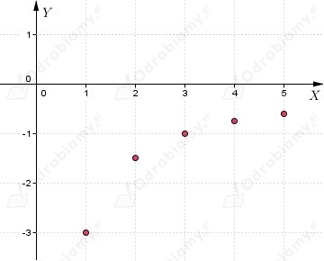
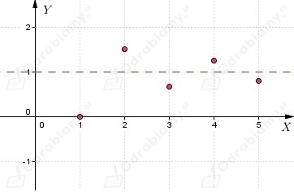
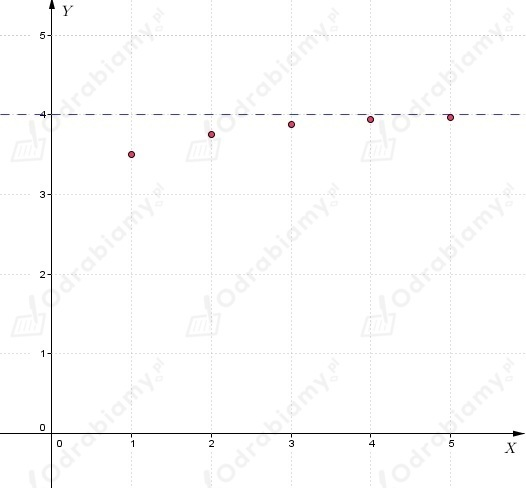

| Liczbę, do której "zbliżają się" wyrazy ciągu nazywamy granicą lub granicą właściwą ciągu. Jeśli ciąg (an) ma granicę równą g, to piszemy:
|
a)
Z treści zadania wiemy, że ciąg jest opisany wzorem:
Wyznaczamy kilka początkowych wyrazów ciągu:
Rysujemy wykres ciągu:

Na podstawie wykresu ciągu możemy odczytać, że jego granicą
jest liczba 0 (kolejne wyrazy ciągu są "coraz bliżej" liczby 0), co zapisujemy:
b)
Z treści zadania wiemy, że ciąg jest opisany wzorem:
Wyznaczamy kilka początkowych wyrazów ciągu:
Rysujemy wykres ciągu:

Na podstawie wykresu ciągu możemy odczytać, że jego granicą
jest liczba 1 (kolejne wyrazy ciągu są "coraz bliżej" liczby 1), co zapisujemy:
c)
Z treści zadania wiemy, że ciąg jest opisany wzorem:
Wyznaczamy kilka początkowych wyrazów ciągu:
Rysujemy wykres ciągu:

Na podstawie wykresu ciągu możemy odczytać, że jego granicą
jest liczba 4 (kolejne wyrazy ciągu są "coraz bliżej" liczby 4), co zapisujemy: